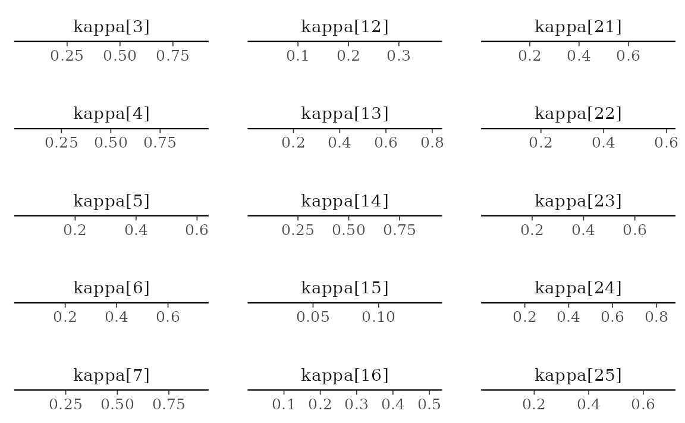

etf <- etf_vix[1:100, 1:3]
# Split-------------------------------
h <- 5
etf_eval <- divide_ts(etf, h)
etf_train <- etf_eval$train
etf_test <- etf_eval$testStochastic Search Variable Selection (SSVS) Prior
-
y: Multivariate time series data. It should be data frame or matrix, which means that every column is numeric. Each column indicates variable, i.e. it sould be wide format. -
har: Order of VHAR -
num_chains: Number of chains- If OpenMP is enabled, parallel loop will be run.
-
num_iter: Total number of iterations -
num_burn: Number of burn-in -
thinning: Thinning -
bayes_spec: Output ofset_ssvs()- By default, use a default semi-automatic approach using
choose_ssvs().
- By default, use a default semi-automatic approach using
-
init_spec: Gibbs sampler initialization byinit_ssvs().- By default,
init_ssvs(type = "auto")uses OLS.
- By default,
-
include_mean = TRUE: By default, you include the constant term in the model. -
minnesota = c("no", "short", "longrun"): Minnesota-type shrinkage. -
verbose = FALSE: Progress bar -
num_thread: Number of thread for OpenMP- Used in both Eigen computation and parallel multi-chain loop
- This option is valid only when OpenMP in user’s machine.
(fit_ssvs <- bvhar_ssvs(etf_train, num_chains = 1, num_iter = 20, include_mean = FALSE, minnesota = "longrun"))
#> Call:
#> bvhar_ssvs(y = etf_train, num_chains = 1, num_iter = 20, include_mean = FALSE,
#> minnesota = "longrun")
#>
#> BVHAR with SSVS Prior
#> Fitted by Gibbs sampling
#> Total number of iteration: 20
#> Number of burn-in: 10
#> ====================================================
#>
#> Parameter Record:
#> # A draws_df: 10 iterations, 1 chains, and 63 variables
#> phi[1] phi[2] phi[3] phi[4] phi[5] phi[6] phi[7] phi[8]
#> 1 0.368 -0.00254 0.217 -0.00659 0.1339 0.04204 0.01909 0.01827
#> 2 0.468 0.01488 0.146 0.01540 0.2228 0.02630 -0.07248 -0.00927
#> 3 0.609 0.00387 0.172 0.00145 0.1130 -0.00280 -0.04074 -0.00871
#> 4 0.473 0.01275 0.235 -0.03514 0.0814 -0.00769 -0.00534 0.03317
#> 5 0.525 0.01106 0.209 -0.02084 0.1746 -0.01760 -0.01623 -0.02526
#> 6 0.510 -0.01942 0.268 0.01555 0.1615 -0.01459 -0.10195 0.00161
#> 7 0.519 0.00428 0.218 0.00403 0.1053 0.00976 -0.06733 0.04154
#> 8 0.596 -0.01144 0.143 -0.00398 0.1405 0.01432 0.02307 -0.00685
#> 9 0.486 0.00996 0.123 0.02278 0.1969 0.00884 -0.05706 -0.01282
#> 10 0.480 -0.02574 0.270 -0.03183 0.1549 -0.02135 -0.04120 0.02119
#> # ... with 55 more variables
#> # ... hidden reserved variables {'.chain', '.iteration', '.draw'}autoplot() for the fit (bvharsp object)
provides coefficients heatmap. There is type argument, and
the default type = "coef" draws the heatmap.
autoplot(fit_ssvs)
Horseshoe Prior
bayes_spec is the initial specification by
set_horseshoe(). Others are the same.
(fit_hs <- bvhar_horseshoe(etf_train, num_chains = 2, num_iter = 20, include_mean = FALSE, minnesota = "longrun"))
#> Call:
#> bvhar_horseshoe(y = etf_train, num_chains = 2, num_iter = 20,
#> include_mean = FALSE, minnesota = "longrun")
#>
#> BVHAR with Horseshoe Prior
#> Fitted by blocked sampling
#> Number of chains: 2
#> Total number of iteration: 20
#> Number of burn-in: 10
#> ====================================================
#>
#> # A draws_df: 10 iterations, 2 chains, and 61 variables
#> phi[1] phi[2] phi[3] phi[4] phi[5] phi[6] phi[7]
#> 1 5.18e-08 1.81e-06 1.51e-04 1.33e-02 4.65e-07 1.08e-03 2.10e-04
#> 2 1.32e-08 2.41e-08 6.55e-06 5.07e-03 2.99e-08 1.51e-03 4.55e-05
#> 3 5.90e-09 3.86e-09 6.53e-07 1.33e-02 8.84e-10 1.30e-06 1.77e-06
#> 4 3.21e-09 2.17e-08 2.52e-07 1.71e-03 1.95e-09 2.25e-05 9.13e-07
#> 5 9.58e-09 2.64e-10 1.61e-06 1.08e-03 4.20e-11 8.90e-07 1.26e-07
#> 6 6.16e-09 3.09e-12 1.42e-05 3.68e-02 3.04e-13 1.30e-05 1.67e-06
#> 7 1.07e-08 -2.40e-14 8.60e-07 4.59e-02 5.47e-13 4.64e-07 7.17e-07
#> 8 3.51e-09 6.67e-13 6.98e-07 7.03e-04 -5.61e-13 2.17e-06 1.95e-08
#> 9 6.72e-12 2.13e-13 2.06e-08 9.49e-05 -2.28e-13 1.77e-07 1.68e-08
#> 10 7.99e-13 5.21e-14 1.26e-09 7.96e-05 1.43e-11 3.26e-07 4.42e-10
#> phi[8]
#> 1 2.08e-07
#> 2 6.77e-08
#> 3 8.60e-09
#> 4 2.25e-08
#> 5 1.31e-08
#> 6 3.40e-08
#> 7 3.84e-09
#> 8 1.32e-09
#> 9 3.17e-10
#> 10 2.86e-11
#> # ... with 10 more draws, and 53 more variables
#> # ... hidden reserved variables {'.chain', '.iteration', '.draw'}
autoplot(fit_hs)
Models with Stochastic Volatilities
bvhar_sv() fits VHAR-SV with shrinkage priors.
- Three different prior for covariance, and specify through
bayes_spec -
sv_spec: prior settings for SV,set_sv()
SSVS
(fit_ssvs_sv <- bvhar_sv(etf_train, num_chains = 2, num_iter = 20, bayes_spec = set_ssvs(), sv_spec = set_sv(), include_mean = FALSE, minnesota = "longrun"))
#> Call:
#> bvhar_sv(y = etf_train, num_chains = 2, num_iter = 20, bayes_spec = set_ssvs(),
#> sv_spec = set_sv(), include_mean = FALSE, minnesota = "longrun")
#>
#> BVHAR with Stochastic Volatility
#> Fitted by Gibbs sampling
#> Number of chains: 2
#> Total number of iteration: 20
#> Number of burn-in: 10
#> ====================================================
#>
#> Parameter Record:
#> # A draws_df: 10 iterations, 2 chains, and 282 variables
#> phi[1] phi[2] phi[3] phi[4] phi[5] phi[6] phi[7] phi[8]
#> 1 0.1923 -0.0150 0.0589 0.6196 0.1281 1.246 -0.20680 0.1381
#> 2 0.1916 -0.0904 0.0905 0.1604 0.0959 0.998 0.12531 -0.1326
#> 3 0.1250 0.1351 0.1232 -0.0715 0.2170 1.141 -0.11030 0.0732
#> 4 0.1413 0.0684 0.1015 0.1019 0.0335 1.021 -0.11200 0.0191
#> 5 0.0253 0.2031 0.2272 0.2522 0.1064 1.024 0.05655 0.0395
#> 6 0.0401 0.0835 0.1535 -0.0659 0.1374 0.987 0.10089 0.1364
#> 7 0.0833 0.1005 0.2023 0.0530 0.0677 0.877 -0.00198 0.0529
#> 8 0.1007 0.0625 0.0916 -0.0214 0.0285 0.875 0.07227 0.0386
#> 9 0.2086 0.0284 0.1603 -0.0781 0.1072 0.850 0.05214 0.0480
#> 10 0.1613 0.0654 0.1417 0.0144 0.0362 0.840 0.20473 0.0723
#> # ... with 10 more draws, and 274 more variables
#> # ... hidden reserved variables {'.chain', '.iteration', '.draw'}
autoplot(fit_ssvs_sv)
Horseshoe
(fit_hs_sv <- bvhar_sv(etf_train, num_chains = 2, num_iter = 20, bayes_spec = set_horseshoe(), sv_spec = set_sv(), include_mean = FALSE, minnesota = "longrun"))
#> Call:
#> bvhar_sv(y = etf_train, num_chains = 2, num_iter = 20, bayes_spec = set_horseshoe(),
#> sv_spec = set_sv(), include_mean = FALSE, minnesota = "longrun")
#>
#> BVHAR with Stochastic Volatility
#> Fitted by Gibbs sampling
#> Number of chains: 2
#> Total number of iteration: 20
#> Number of burn-in: 10
#> ====================================================
#>
#> Parameter Record:
#> # A draws_df: 10 iterations, 2 chains, and 315 variables
#> phi[1] phi[2] phi[3] phi[4] phi[5] phi[6] phi[7] phi[8]
#> 1 1.81170 -0.04887 0.17674 0.1222 -0.96104 0.4752 -1.7864 1.6946
#> 2 0.42250 -0.05241 -0.09456 -0.0695 -0.40474 -0.2182 0.3485 1.2815
#> 3 0.00219 -0.12305 0.00251 -0.1339 0.09801 0.1174 0.5293 0.6035
#> 4 0.40343 -0.08218 -0.05841 0.3230 0.08070 0.0878 0.0715 0.5309
#> 5 0.48051 0.00717 -0.05711 0.1016 0.09021 0.1951 0.0800 -0.2272
#> 6 0.48796 0.03734 0.00408 0.0536 0.05661 0.6725 0.0156 0.4734
#> 7 0.45704 0.01631 0.00221 0.0204 -0.00182 1.1471 0.0322 0.1542
#> 8 0.57872 0.00779 0.03210 -0.2233 0.08151 1.1284 -0.0615 0.0838
#> 9 0.55216 0.00792 0.04162 -0.2964 0.12855 1.1668 0.0321 0.1460
#> 10 0.39147 0.06694 -0.00967 -0.0223 0.18195 1.0692 0.0112 -0.0575
#> # ... with 10 more draws, and 307 more variables
#> # ... hidden reserved variables {'.chain', '.iteration', '.draw'}Bayesian visualization
autoplot() also provides Bayesian visualization.
type = "trace" gives MCMC trace plot.
autoplot(fit_hs_sv, type = "trace", regex_pars = "tau")type = "dens" draws MCMC density plot. If specifying
additional argument facet_args = list(dir = "v") of
bayesplot, you can see plot as the same format with
coefficient matrix.
autoplot(fit_hs_sv, type = "dens", regex_pars = "kappa", facet_args = list(dir = "v", nrow = nrow(fit_hs_sv$coefficients)))